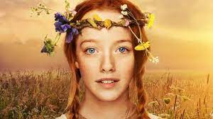

Sobre Anne with an E
Caros leitores,
Anne with an E é uma série canadense transmitida originalmente pelo
canal CBC Television.
A história acompanha a vida de Anne Shirley, uma jovem órfã que, após
uma infância de abusos entre orfanatos e casas de estranhos,
é enviada por engano para viver com um casal de irmãos em idade
avançada.
Com o passar do tempo, a pequena garota de 13 anos transforma a vida
de Marilla, Matthew Cuthbert e de toda a cidade com seu jeito
extrovertido, sua inteligência e imaginação brilhante.
As aventuras de Anne abordam temas atemporais e de atual relevância
como identidade, feminismo, bullying e preconceito
